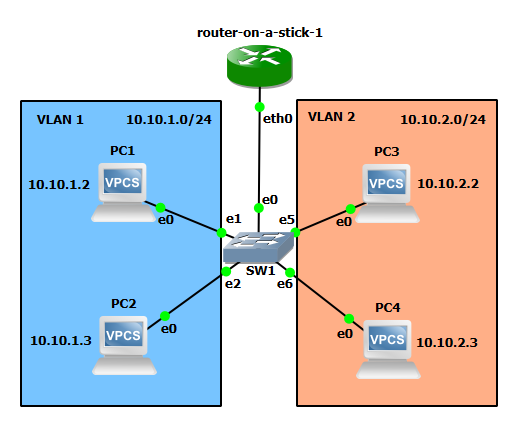
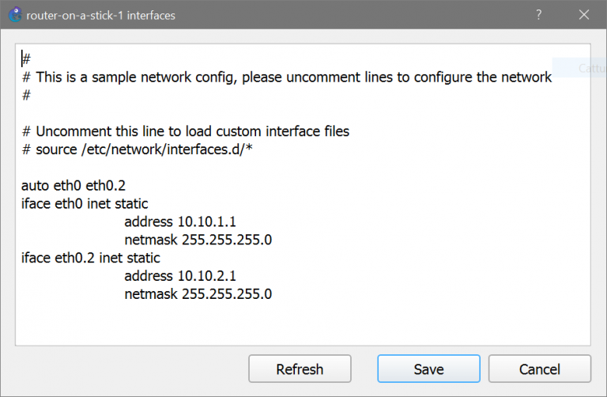
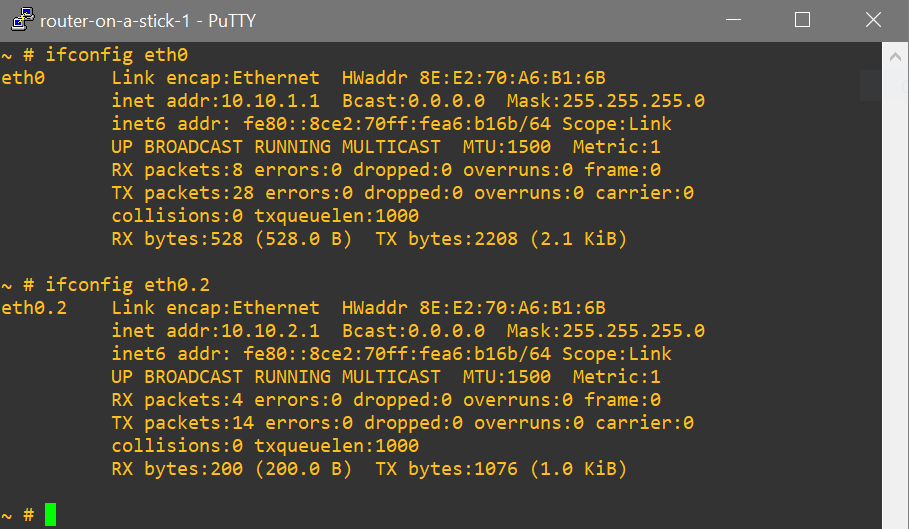
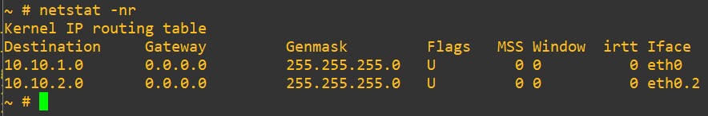
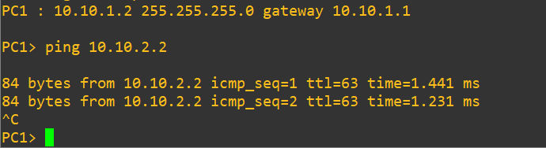
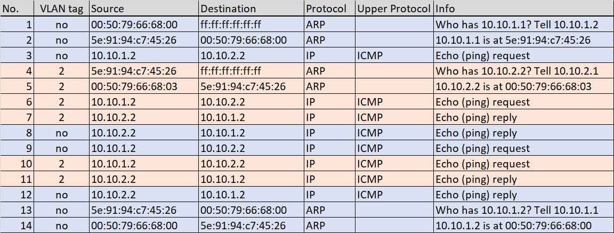

Lab #11
Two VLANs connected by a router on a stick
The purpose of this lab is to show how two VLANs, created on a single switch, can be connected by means of a router.
The router-on-a-stick setup is shown, where a router with a single physical interface is assigned two different IP addresses associated to two different VLANs.
Preparation steps
Before this experiment is executed, it is required that you have previously configured GNS3 to make it able to instantiate a Docker container of a Linux-based router based on the FRR (Free Range Routing) software suite, as described in Lab #3.
In particular, the GNS3 VM in which Docker containers are activated should have:
- IP forwarding enabled in the kernel;
This can be verified by issuing at the router console the command:
cat /proc/sys/net/ipv4/ip_forward
and verifying that the obtained output is 1.
This setting can be made permanent in the GNS3 VM by adding the line:
net.ipv4.ip_forward = 1
in the configuration file /etc/sysctl.conf that can be edited with the nano text editor through the command:
sudo nano /etc/sysctl.conf
- the kernel module 8021q loaded;
This can be verified by issuing at the router console the command:
modinfo 8021q
This setting can be made permanent in the GNS3 VM by installing the vlan package:
sudo apt install vlan
If the 8021q module is not loaded after installation, you can use the following command to manually load the module:
modprobe --first-time 8021q
Experiment steps
- Create the following topology in GNS3. Choose the "GNS3 VM" server to instantiate all the devices of this lab.

- When the devices are still inactive, right-click on the SW1 switch icon and configure it as follows:
- port 0 configured in trunk mode (802.1q) and assigned natively to VLAN 1;
- ports 1, 2, 3, 4 configured in access mode and assigned to VLAN 1 (default VLAN);
- ports 5, 6, 7 configured in access mode and assigned to VLAN 2.

- When the devices are still inactive, right-click on the router icon and select the Configure option.
- Press Edit to modify the router's network configuration.
Modify the router's interfaces configuration as illustrated in the following picture.

The above configuration:
- assigns a static IP address 10.10.1.1 with netmask 255.255.255.0 to the eth0 interface, that will exchange untagged frames;
- creates a virtual interface, eth0.2, configured with a static IP address 10.10.2.1 with netmask 255.255.255.0, that will exchange 802.1q tagged frames with VLAN ID 2.
- Start all devices.
- Verify router's configuration by issuing the
ifconfig command at the router's console.
This command should produce the output as shown in the picture below.

The router forwards traffic between subnets 10.10.1.0/24 and 10.10.2.0/24 which are directly reachable from its interfaces eth0 and eth0.2 as shown by the netstat -nr command.

- Start capture on link connecting SW1 to the router.
- Open PC1 terminal and execute the command:
ip 10.10.1.2/24 10.10.1.1
- Open PC2 terminal and execute the command:
ip 10.10.1.3/24 10.10.1.1
- Open PC3 terminal and execute the command:
ip 10.10.2.2/24 10.10.2.1
- Open PC4 terminal and execute the command:
ip 10.10.2.3/24 10.10.2.1
- In PC1 terminal execute the command:
ping 10.10.2.2
and verify that answers are received from PC3.

Traffic analysis
The following picture shows a sequence of packets captured by Wireshark on the trunk link connecting switch SW1 to the router.

Notice that the same ICMP echo request packet sent by PC1 towards PC3 is seen twice: once untagged on its travel from PC1 to the router (packet no. 3) and a second time tagged with VLAN ID 2 on its travel from the router to PC3 (packet no. 6).
Likewise, the same ICMP echo reply packet sent by PC3 back to PC1 is seen twice: once tagged with VLAN ID 2 on its travel from PC3 to the router (packet no. 7) and a second time untagged on its travel from the router to PC1 (packet no. 8).
Return to list of labs
Copyright (c) 2024 - Roberto Canonico
Last updated: 24/09/2024 by Roberto Canonico